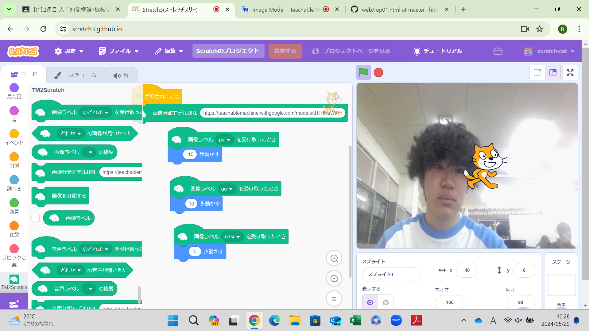
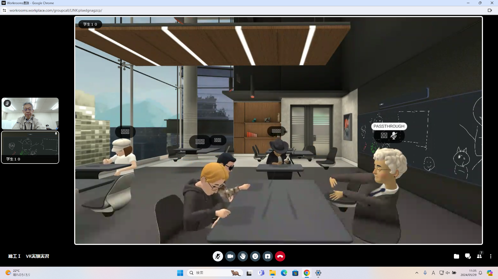

第2週目
2-1 2週目のレポートをHTMLで作る
1.内容
githubを使用してレポートの１から３を作成する方法を学んだ。
2.感想
前回の自分のホームぺージを作る作業があったことで、少しずつ扱いに慣れてきたので
改行を使ったりして、書くだけで終わらず
読みやすさも意識して作っていくようにした。
ただまだ改行に慣れていないので、自然に改行できるように頑張りたい。
3. 2週目が完成した人は1週目のレポートも完成させる
2-2 機械学習体験

1.内容
自分のグーとパーを認識させて、それぞれを出した時の動きをスクラッチに当てはめた。
2.感想
まずグーとパーを認識させたとき、自分の顔が映っている時でしか認識させなかったので,
自分が映っていないときだと明らかにグーでも
認識してくれず、誤作動が多かったり、
自分が映っていてもカメラとの距離感が近かったりすると認識されないなどまだまだ甘いなと思った。
もっと様々なものを認識させて細かい動きができるようにしたい。
2-3 VR（バーチャルリアリティー：Virtual Reality）会議室の体験

1.内容
VRゴーグルを使って、仮想空間内で黒板に絵をかいたり、移動したりと自由に行動した。
2.感想
つけていると体の動きに連動して、３６０度どの向きでも対応してくれ、またコントローラーで移動もできるし
,
仮想空間内でペンを使って字を書くことができることにも感動した。
またゴーグルをつけていると周りが見えないのではと心配していたが
ゴーグルに２回衝撃を与えることであいまいではあるが
現実の世界を見渡せたり、自分の行動範囲を設定できたりと素晴らしいなと思った。
個人的に買おうと思った。